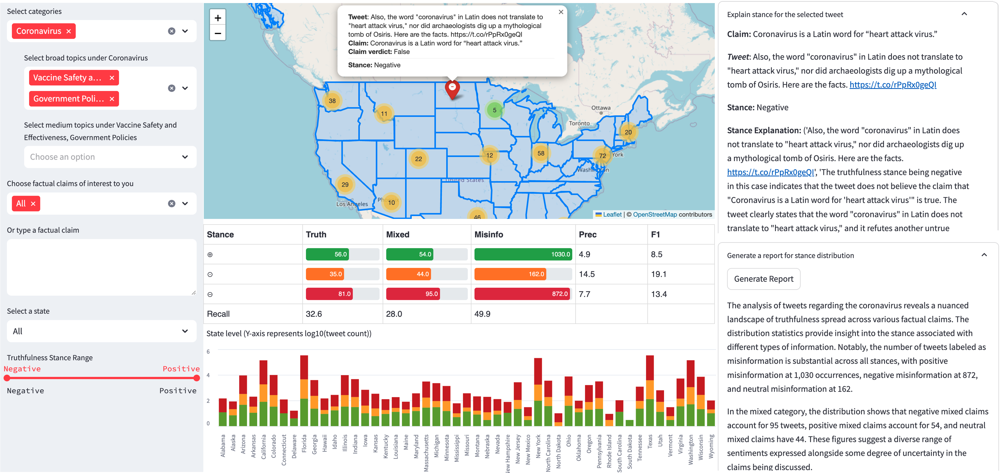

Helps understand and analyze vast and diverse social-media content
Used ClaimBuster to detect factual claims, encoded with Sentence-BERT, and clustered with HDBSCAN to identify distinct claims by filtering redundancy
Leveraged LLMs (GPT-4o mini and Gemini 2.0 Flash) on TACC Lonestar6 to generate multi-granularity topics (broad, medium, detailed) and automate taxonomy construction
LLMTaxo Framework
TrustMap: Mapping Truthfulness Stance of Social Media Posts on Factual Claims for Geographical Analysis
A truthfulness stance map for visualizing stance distributions across topics and regions at varying levels of granularity
Users can select factual claims from user-selected topics or enter their own claims for exploration
An LLM-based explanation of the truthfulness stance for a claim–tweet pair can be generated on demand. A stance distribution report can also be generated for the selected claim(s)

TrustMap User Interface
Wildfire: A Twitter Social Sensing Platform for Laypersons
End-to-end system to detect cherry-picking in news reporting by identifying omitted but contextually important statements using fine-tuned and generative language models
Designed and developed a data annotation interface to support efficient human labeling of data examples